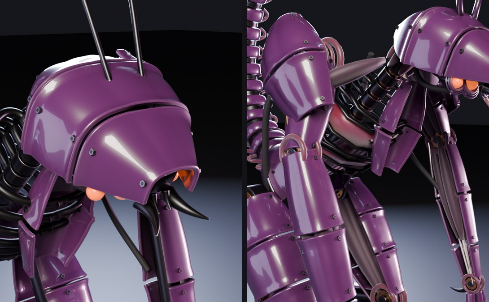

The Scytheling started as a test for the painted lattice idea. A model sheet and a side view were laid behind the scene as reference planes, and the creature was built to match them. Image generators and an image-to-3D model were tried first for the parts. The results were soft and lumpy, so they were dropped and every part was built from code instead.
Each armour plate is a loft, a cross-section swept along a path, with a profile that swells and tapers along its length. Plates get seams, bolts, a dark underside and a little wear on the edges. Joints are stacked cylinders and collars, the arms and legs carry hydraulic pistons, and the tail is a chain of capsules ending in a curved blade.
Under all of it is a rig. The claws and feet have IK, so moving a target moves the whole limb. The spine, neck and tail are chains of bones, and each part is parented to the bone it sits on.
Because it's rigged, each pose is a short script that turns the spine and neck, moves the claw targets and bends the tail a few degrees per segment. Stalk, rear, strike and glance are four of those scripts, rendered in Cycles from the same file.

A vision model's critique kept coming back to one point. It read as a robot assembled from parts, and it should look like an organism whose biology happens to be metal. So a second script grows anatomy over the machine without touching the original build:
Everything new is bound to the same rig, so the poses still work on the new version.